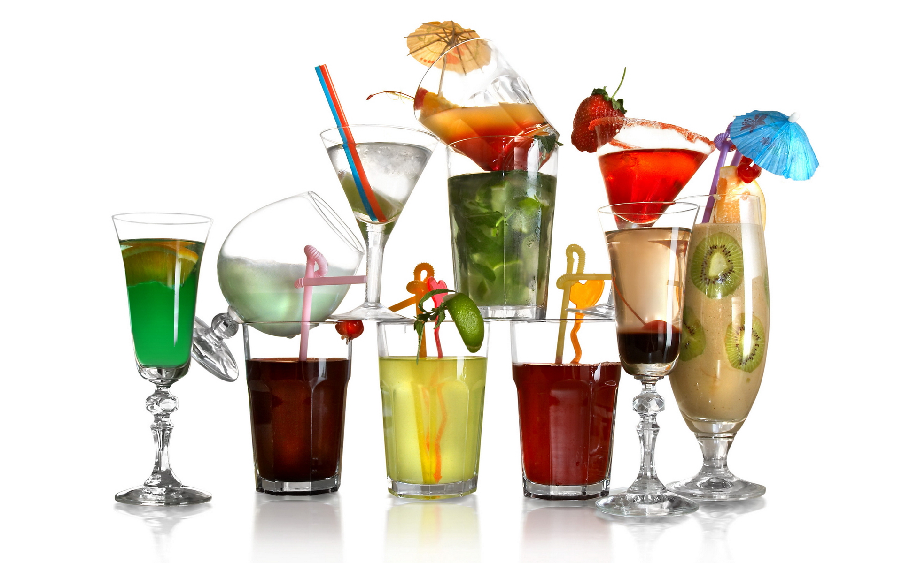

Кисель - это напиток, изготавливаемый на основе натуральных соков из лесных ягод с добавлением крахмала и пектина. Это питательный, полезный продукты, который с успехом может заменять завтрак, а так же подарить чувство насыщения, когда вы голодны, а времени на полноценный прием пищи нет не хватает. Кисели являются традиционными напитками русской кухни, которые одинаково любят и взрослые и дети. Приготовленные на основе натуральных соков они обладают замечательными вкусовыми качествами. В жаркий день, охлажденный кисель освежит, а зимой плодово-ягодная гамма вкуса напомнит аромат лета. Кисель это истинное удовольствие для любителей, он незаменим на обеденном столе.
Кисель из свежих ягод (клюквы, брусники, черники, черной и красной смородины)
Ягоды 1 1/2 стакана,
сахарный песок 3/4 стакана,
крахмал картофельный 1 1/2 ст. л. (без верха),
вода 4 1/2 стакана.
Ягоды перебрать и хорошо промыть, затем отжать сок, слить его в не окисляющуюся посуду и, накрыв крышкой, поставить на холод. Оставшуюся мезгу положить в кастрюлю, залить горячей водой и кипятить в течение 4 -6 минут, после чего процедить через частое сито. В приготовленный отвар всыпать сахарный песок, вновь нагреть до кипения и удалить с поверхности пену. Крахмал всыпать в отдельную посуду, развести холодной водой и процедить. Затем влить его в горячий ягодный сироп, непрерывно размешивая, после чего кисель довести до кипения и добавить отжатый и охлажденный сок. Если кисель приготовляется из не вполне зрелых ягод, то для сохранения окраски киселя в ягодный сок после первого процеживания можно ввести лимонную кислоту.
Кисель из свежей черники
Черника свежая 1 стакан,
сахарный песок 1/2 стакана,
крахмал 4 чайн. л.,
лимонная кислота на кончике ножа,
вода 3 1/2 стакана.
Ягоды черники перебрать, промыть в холодной воде, тщательно размять, залить горячей водой и кипятить в течение 8-10 минут.
Отвар процедить, всыпать сахар, добавить лимонную кислоту, вторично вскипятить. Влить разведенный холодной питьевой водой крахмал, быстро размешать и довести до кипения. Кисель разлить в порционную посуду и охладить.
Кисель из кураги
24 г кураги,
24 г сахара,
8 г крахмала,
1 г кислоты лимонной.
Курагу перебрать, тщательно промыть в теплой воде, положить в посуду, залить горячей водой и варить до готовности. После окончания варки отвар процедить, курагу протереть через сито, соединить с отваром, добавить сахар и быстро довести до кипения.
Затем отставить на борт плиты, влить крахмал, разведенный холодной водой, и, непрерывно помешивая, прогреть 2-3 минуты. Снять посуду с киселем с плиты, добавить лимонную кислоту, разлить в креманки или вазочки, посыпать сахаром, после чего охладить.
Кисель из кизила, крыжовника
125 г ягод,
125 г сахара,
50 г крахмала - для жидкого киселя.
Ягоды промыть, положить в горячую воду и кипятить 10 минут. Отвар слить, а оставшиеся ягоды размять. К отвару добавить мякоть, прокипятить и процедить, а затем всыпать сахар, кипятить. Добавить разведенный в холодной воде крахмал и заварить кисель.
Кисель из варенья (клюквенного, брусничного, из черной смородины и т.д.)
Варенье 2/3 стакана,
сахарный песок 1 ст. л.,
крахмал 4 чайн. л.,
вода 4 стакана.
Варенье развести горячей водой и нагреть до кипения, затем процедить через сито, одновременно протирая ягоды, добавляя сахар и лимонную кислоту. Во вновь доведенный до кипения отвар тонкой струей влить разведенный холодной водой картофельный крахмал. Готовый кисель разлить в порционную посуду и охладить.
Кисель из айвы
Айва 2 шт.,
сахарный песок 1/2 стакана,
лимонная кислота на кончике ножа,
крахмал 1 1/2 ст.л.,
вода 4 стакана.
Нарезанную дольками айву залить горячей водой и варить в течение 20 - 25 минут. Когда айва разварится, протереть ее вместе с отваром.
В отвар всыпать сахар, добавить лимонную кислоту, размешать и довести до кипения. Затем ввести крахмал, разведенный холодной водой, и снова довести до кипения.
Ягодный кисель с ванильным мороженым
1,5 л воды
100 г сахара
500 г любых замороженных ягод (предпочтительно красных)
3 ст. л. крахмала
Воду вскипятить с сахаром, добавить ягоды. Дать вновь закипеть. Готовить еще 3 мин., снять с огня и протереть через сито. Крахмал развести в небольшом количестве воды и, непрерывно помешивая, ввести в кисель. Дать остыть, разлить по бокалам. Положить в каждый бокал ложку ванильного мороженого и подать.
Молочный кисель с морковью
1 л молока
2 морковки
5 ч. л. крахмала
сахар по вкусу
Морковь очистить, натереть на мелкой терке. Крахмал развести в 1 стакане холодного молока. Оставшееся молоко довести до кипения, добавить тертую морковь, сахар по вкусу и варить 1 мин. Непрерывно помешивая, ввести разведенный в молоке крахмал. Снять с огня. Разлить по стаканам или формочкам. Дать остыть.
Клюквенный кисель
фунт (0,45 кг) клюквы
полстакана сахара
стакан картофельной муки (крахмал)
Клюкву раздавить деревянной ложкой или растолочь, разбавить водой, чтобы получилось 6 стаканов морса. Процедить, тщательно выжимая; 5 стаканов морса смешать с сахаром и вскипятить. Оставшийся стакан морса размешать с картофельной мукой и, продолжая помешивать, влить в кипящий морс. Слить в форму, предварительно промытую холодной водой, поставить на лед, для того чтобы кисель застыл. Позже выложить на блюдо. Подавать со сливками, молоком и мелким сахаром.
Кисель слоеный
Для густого клюквенного киселя:
100 г клюквы
0,5 чашки сахара
4 ч. л. крахмала
Для молочного киселя:
400 мл молока
2 ст. л. сахара
3,5 ч. л. крахмала
Сварить клюквенный и молочный кисель. На противень, смоченный водой и посыпанный сахаром, налить слой молочного киселя и хорошо охладить. На застывший слой молочного киселя налить остывший, но еще не полностью загустевший клюквенный кисель и вновь охладить.
Перед подачей разрезать на порции и уложить в тарелки. Можно готовить слоеный кисель в формочках, а также в порционной посуде из прозрачного стекла.
Кисель овсяный на отваре из шиповника
500 мл воды
0,5 стакана сухих плодов шиповника
200 г овсяных хлопьев
соль, сахар по вкусу
30 г сливочного масла
Замочить шиповник в 250 мл теплой воды на 30 мин. Добавить еще 250 мл воды и варить 20 мин. Отвар процедить.
Овсяные хлопья залить горячим отваром шиповника и дать настояться, 15 мин. Настой процедить, а гущу отжать. Снова залить гущу подогретым настоем, оставить еще на 15 мин. Вновь процедить, гущу отжать. Повторить все еще раз.
В получившееся овсяное молочко добавить по вкусу сахар, соль и, помешивая, варить до загустения. В конце варки положить сливочное масло, перемешать и разлить в смоченные водой формы.
* Охлажденный кисель можно есть ложкой.
Кисель из ревеня со взбитыми сливками
100 г ревеня
2 ч. л. сахара
1,5 ч. л. крахмала
корица по вкусу
Вскипятить 2,5 чашки воды. Ревень нарезать кусочками по 1–2 см, опустить в кипяток, добавить сахар, корицу и варить до готовности. Затем ввести крахмал, дать закипеть. Готовый кисель разлить в чашки, посыпать сахаром и охладить. Подать с холодным молоком или взбитыми сливками
Кисель из ревеня
на 4 порции:
500 г стеблей ревеня
100 г сахара
1,5 ст. л. крахмала
1 л воды
Стебли ревеня тщательно вымыть и нарезать небольшими кубиками. Залить водой, добавить сахар и поставить на огонь. Довести до кипения и сразу же снять с огня. Дать остыть.
* Количество сахара в зависимости от вашего вкуса можно увеличить до 150–200 г.
Откинуть на дуршлаг. Отвар сохранить, а ревень переложить в блендер и измельчить до состояния однородной массы.
Крахмал развести в стакане сохраненного отвара. Смешать с ревенным пюре. Поставить на огонь и варить 1 мин., постоянно помешивая.
Кисель из ревеня можно подавать как в горячем, так и в холодном виде. Холодный кисель хорошо сочетается со сливочным мороженым или свежей клубникой.
Кисель шоколадный
50 г шоколада (или 20 г какао-порошка), 0,5 стакана воды, 1,5 стакана молока, 8O г крахмала, 50 г сахара.
Шоколад крупно натереть, распустить в горячей воде. Добавить сахар и закипятить. Во время кипения влить разведенный в 0,5 стакана холодного молока крахмал, все время помешивая. После закипания снять с огня, разлить в стаканы и охладить.
Из 2 белков, 2 столовых ложек пудры и ванили взбить пену и перед подачей положить на охлажденный кисель.
Кисель из меда
На 1 порцию киселя: 200 г меда, 50 г крахмала.
Мед развести горячей водой, довести до кипения, снять пену, добавить разведенный водой крахмал и заварить кисель. В сироп из меда можно добавить лимонную кислоту.
К киселю отдельно подать молоко или сливки.
Кисель из слив, вишен
На 1 л киселя: 150 г фруктов, 125 г сахара, 50 г крахмала (для густого киселя — 80—90 г).
Ягоды промыть, косточки удалить, залить их горячей водой, прокипятить несколько минут и процедить. Мякоть пересыпать сахаром (половину нормы) и оставить постоять на холоде около 1 часа. Образовавшийся сок при этом слить. Оставшиеся ягоды положить в отвар от косточек, прокипятить 10—15 минут и протереть, затем добавить сахар, довести до кипения, заварить крахмал и влить сок, оставшийся от настаивания ягод с сахаром
Кофейный кисель
Приготовить крепкий кофе, по вкусу взять половину или четверть его количества холодного молока, растворить в нем крахмал (приблизительно 15-20 г на 0,5 л жидкости) и, постоянно помешивая, влить только что заваренный кофе. Когда загустеет, снять с огня и охладиить. Сахар положить по вкусу .